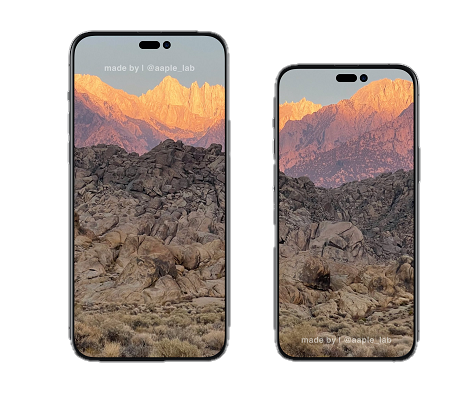
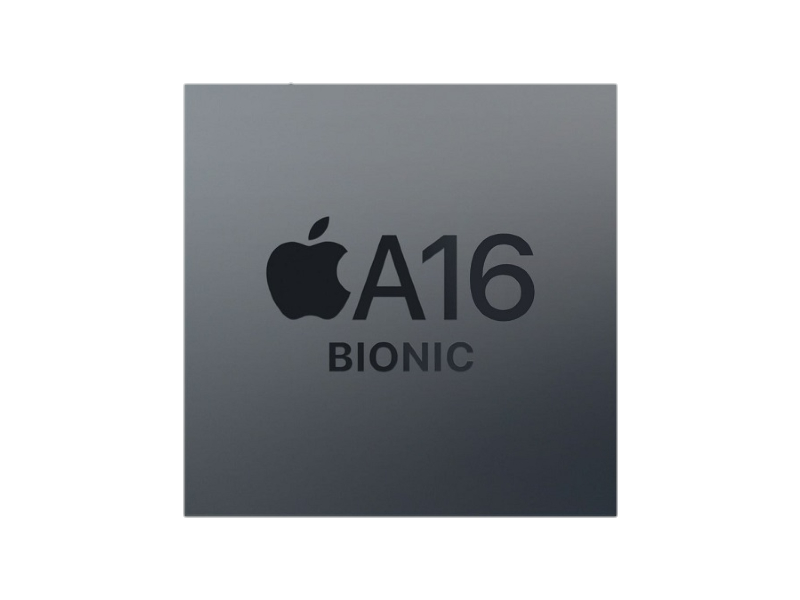
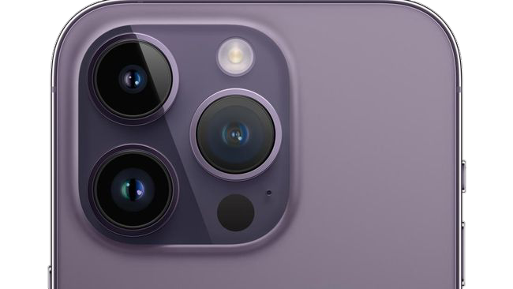
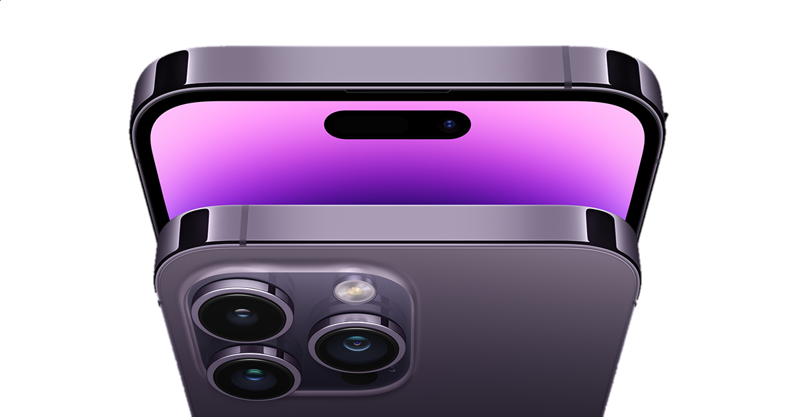

Layar
Layar OLED menyeluruh 6,1 inci (diagonal)
Resolusi 2556 x 1179 piksel pada 460 ppi
Layar Super Retina XDR
Prosesor
A16 Bionic dengan Neural Engine
CPU 6-core dengan 2 core performa dan 4 core efisiensi
GPU 5-core
Kamera Belakang
Triple kamera 12MP
Ultrawide, Wide, Telephoto
Penutup lensa kristal safir
Smart HDR 4
Deep Fusion
Kamera Depan
12MP TrueDepth kamera
Face ID
Perekaman video 4K pada kecepatan 24 fps, 25 fps, 30 fps, atau 60 fps
Mode Sinematik hingga HDR 4K pada kecepatan 30 fps
Fokus otomatis dengan Focus Pixels
Baterai

Kapasitas: 3700mAh
Pengisian daya cepat
Pemutaran video (Hingga 23 jam)
Pemutaran video Streaming (Hingga 20 jam)
Pemutaran audio Hingga 75 jam
Warna

Hitam Kosmik, Perak,
Emas, Ungu Tua